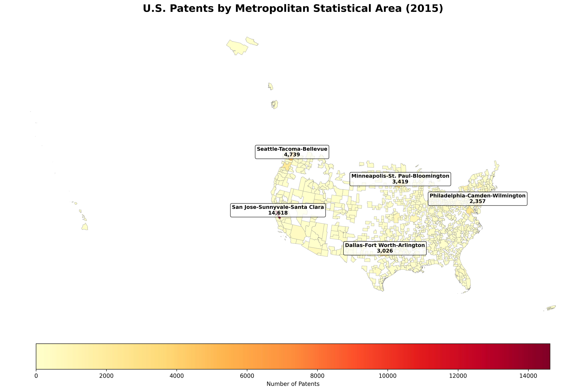
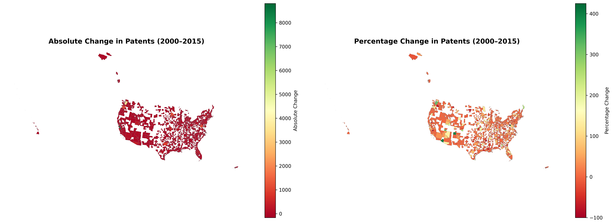

📊 Key Metrics (2015, Mapped MSAs)
These summary statistics are based on the Metropolitan Statistical Areas (MSAs) that successfully joined with the CBSA shapefile.
📦 How Are Patents Distributed Across MSAs?
The histogram and summary statistics show an extremely unequal distribution of patent activity. A tiny group of superstar metro areas dominate output, while most regions contribute only a small number of patents. The buckets below use your calculated counts from the 2015 data.
Innovation Giants 9 MSAs
Only nine metro areas produced more than 1,000 patents each. These include hubs like Silicon Valley, Seattle, and Minneapolis–St. Paul, which anchor national innovation.
Strong Producers 16 MSAs
Another 16 MSAs fall in the 500–999 patent range. These metros have sizable research or industrial bases but remain far behind the very top tier.
Mid-Tier Contributors 60 MSAs
60 MSAs report between 100 and 499 patents. They form a broad “middle class” of innovation – important regionally, but modest at the national scale.
Long Tail of Small Producers 202 MSAs
A large group of 202 MSAs record fewer than 100 patents. Many of these metros appear as pale cells on the choropleth map, emphasizing how sparse activity is outside core hubs.
Innovation Deserts 658 MSAs
Finally, 658 mapped MSAs report zero patents in 2015. This stark contrast with the top hubs underscores how geographically concentrated inventive activity is in the U.S.
📈 Regional Trends in Patent Distribution
The spatial analysis reveals strong clustering of innovation along the coasts and in a few inland technology corridors. Patent-intensive MSAs stand out clearly on the choropleth map while large portions of the interior have little to no activity.
The West region is the clear leader, generating about 27,699 patents, or roughly 42% of all mapped patents in 2015. Within this region, San Jose–Sunnyvale–Santa Clara alone accounts for 14,618 patents. When combined with other Bay Area and Pacific Northwest hubs, the West forms a dense technology cluster centered on information technology, software, and electronics.
The Northeast corridor is the second major innovation belt. With a bit over 10,000 patents (about 16% of the total), it includes powerful MSAs such as Boston–Cambridge and the New York metro area. These regions benefit from world-class research universities, biomedical firms, and financial and business-services ecosystems.
The Midwest and South contribute meaningful but smaller shares: around 13,340 patents from the Midwest (~20%) and 7,122 patents from the Southeast (~11%), with the Southwest adding another 5,282 patents (~8%). These regions are anchored by manufacturing and logistics hubs such as Chicago, Detroit, Dallas, and Atlanta, but most of their MSAs remain in the low-patent buckets.
Your change-over-time (delta) analysis between 2000 and 2015 shows that 181 MSAs increased their patent counts while 98 MSAs declined. The biggest absolute gains occurred in technology centers like San Jose, Seattle, Portland, Minneapolis–St. Paul, Washington, DC, and Dallas, confirming that already-strong hubs captured much of the growth.
Overall, the results highlight a “winner-takes-most” geography: a handful of metro areas form dense innovation ecosystems with deep talent pools and capital, while hundreds of other MSAs remain peripheral or entirely absent from the patent landscape.
🌎 Regional Breakdown (2015, Mapped Data)
West
Midwest
Northeast
Southeast
Southwest
🏙️ Top 10 Metropolitan Areas by Patent Count (2015)
The bar chart in your notebook is complemented here with a compact table. Together they show how a short list of metros dominates patent production.
| Rank | Metropolitan Area | Patents | Notes |
|---|---|---|---|
| 1 | San Jose–Sunnyvale–Santa Clara, CA | 14,618 | Core of Silicon Valley super hub |
| 2 | Seattle–Tacoma–Bellevue, WA | 4,739 | Cloud, retail tech, and software |
| 3 | Minneapolis–St. Paul–Bloomington, MN–WI | 3,419 | Strong in medical devices and manufacturing |
| 4 | Dallas–Fort Worth–Arlington, TX | 3,026 | Telecom, electronics, and logistics |
| 5 | Philadelphia–Camden–Wilmington, PA–NJ–DE–MD | 2,357 | Pharma and life-science corridor |
| 6 | Washington–Arlington–Alexandria, DC–VA–MD–WV | 2,310 | Defense, communications, and public-sector tech |
| 7 | Portland–Vancouver–Hillsboro, OR–WA | 2,163 | Semiconductors and hardware manufacturing |
| 8 | Rochester, NY | 1,217 | Optics and imaging legacy cluster |
| 9 | Albany–Schenectady–Troy, NY | 1,090 | Nanotech and materials research |
| 10 | Bremerton–Silverdale, WA | 907 | Specialized, defense-linked activity |
🔍 High-Level Insights
- Extreme concentration: the top five MSAs alone account for over 40% of all mapped patents, while hundreds of MSAs produce only a handful each.
- Coastal strength: West + Northeast regions together generate roughly three-fifths of mapped patents, reflecting deep historical and institutional advantages.
- Diverging trajectories: between 2000 and 2015, 181 MSAs grew in patent output but 98 declined, with the largest gains concentrated in technology hubs.
- Sectoral specialization: observable clusters include Silicon Valley (software & chips), Boston (biotech), Detroit-Chicago (manufacturing), and Austin–Seattle (cloud and platforms).
- University–industry linkages: MSAs anchored by major research universities consistently sit in higher patent buckets, underlining the role of academic-industrial collaboration.
📉 Interactive Visualizations (from your notebook)
These links open the Plotly dashboards you exported from the notebook. They allow you to hover, zoom, and explore individual MSAs and trends.
⏱️ National Trends Over Time (2000–2015)
Your yearly summary table shows that total patent counts across all MSAs increased from about 80,000 in 2000 to roughly 135,000 by 2015. The average number of patents per MSA rose from just over 210 to more than 360, while the median remained much lower – another sign of a skewed, hub-dominated distribution.
The time-series plot reveals a mild dip in the mid-2000s followed by a sharp acceleration after 2010. This jump coincides with the rapid scale-up of smartphones, cloud computing, and platform-based business models, which are heavily concentrated in just a few MSAs.
Combining the time-series and delta map, we can see that national growth is driven primarily by technology corridors rather than a broad-based rise across all regions. Many smaller MSAs remain flat or even decline, suggesting that innovation advantages can be persistent and difficult to replicate.
📋 Methodology (Data & Processing)
Data source: USPTO utility patent counts by U.S. Metropolitan Statistical Area (MSA), with annual values from 2000–2015. The analysis focuses on the subset of MSAs that could be matched to Census CBSA shapefiles for mapping.
Pre-processing: You cleaned and harmonized names by creating a name_clean field,
merged the patent table with the CBSA geometry, and constructed time-series panels across years.
Missing values were treated conservatively, and MSAs with zero patents were kept in the map to show
“innovation deserts”.
Analytics: Using pandas and geopandas you computed descriptive statistics
(mean, median, standard deviation), regional aggregations, and 2000–2015 deltas (absolute and percent change)
for each MSA. Plotly was used for interactive choropleths, ranked bar charts, time-series plots, and
histograms of the patent distribution.
Limitations: Patent counts measure inventive output, not commercial success or social impact. Corporate headquarters and inventor address conventions can bias geographic assignment, and multi-inventor patents are attributed to a single MSA. Still, the patterns provide a robust picture of where formal, patent-based innovation is concentrated.
💡 Policy and Economic Implications
Regional development: The high concentration of patents in a small set of hubs implies that many regions may struggle to participate in knowledge-intensive growth. Targeted investment in universities, research parks, and early-stage entrepreneurship could help secondary MSAs move up the distribution.
Talent and capital flows: Patents cluster where skilled workers and venture capital are dense. This creates self-reinforcing feedback loops: successful hubs attract more talent and capital, which in turn generate more patents. Regions outside these hubs may need coordinated strategies focusing on quality of life, STEM education, and connectivity to larger ecosystems.
Future outlook: Emerging tech hubs such as Austin, Seattle, and Raleigh–Durham show that new centers can grow rapidly when universities, industry, and policy align. The challenge is to translate isolated successes into a more balanced national innovation geography.
📸 Static Visualization Gallery
Geographic Distribution Map
Choropleth visualization of 2015 patent density across U.S. MSAs. Darker colors highlight the dominant innovation hubs.
Change in Patents (2000–2015)
Side-by-side maps showing absolute and percentage change. Many coastal MSAs move sharply upward, while numerous interior regions remain flat or decline slightly.